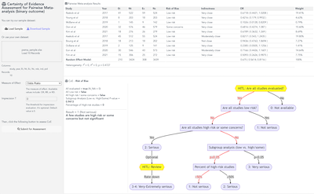
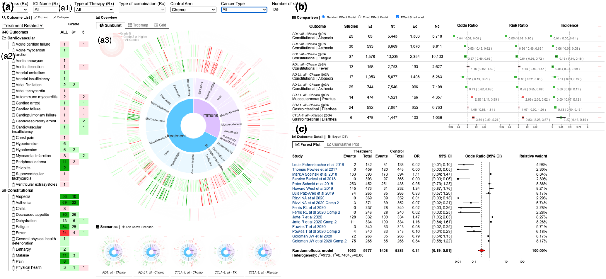
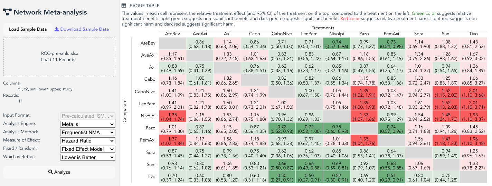
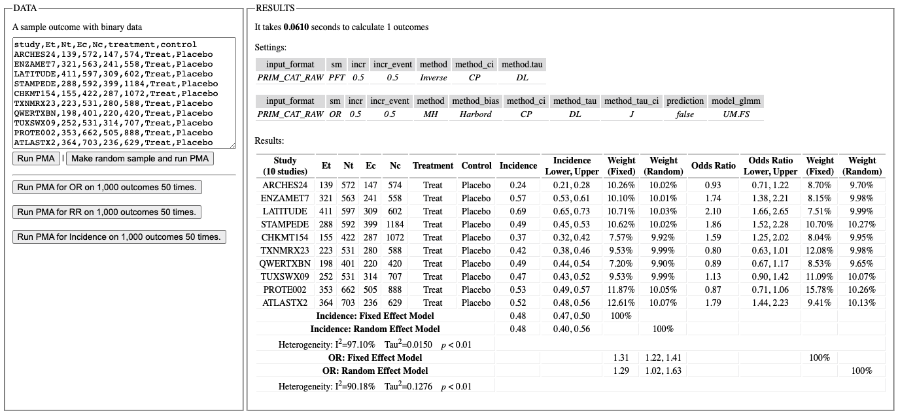
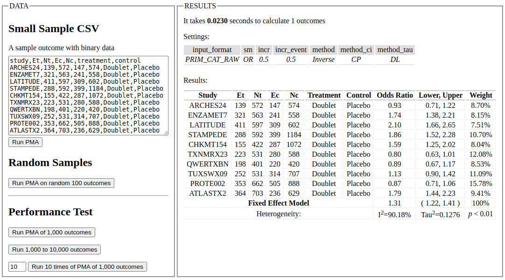

Meta.js
Meta.js is a JavaScript library for real-time meta-analysis, including Pairwise
Meta-Analysis and Network Meta-Analysis.
Here are some demos:
Visual Explanation of CoE Assessment
Visualization of the certainty of evidence assessment
Visual Analysis of PWMA
Exploring the PWMA results of many outcomes in real time
Real-time calculation of NMA
Fixed effect estimation
Real-time calculation of PWMA
Random/Fixed effect estimation
Real-time calculation of PWMA
Fixed effect estimation
